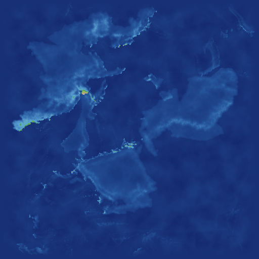
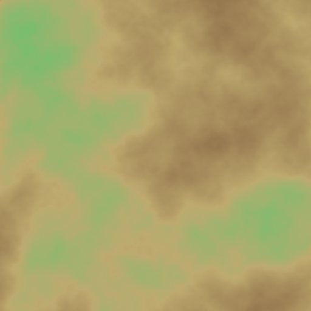

01
板块模拟原始高程
platec 板块构造模拟输出的原始高程图，山脉链已初步成形

02
板块分布图（模拟原始）
platec 随机撒种生长出的 10 个板块，边界看起来较杂乱

02b
合并后六大板块
2 个海洋板块（中部）+ 4 个大陆板块（四周），边界为自然蜿蜒曲线、无缝拼合无飞地

03
陆地居中
center_land：平移地图让海洋尽量集中在边界

04
叠加噪声
add_noise_to_elevation：8 层 Simplex 噪声为地形增加细节

05
边界海洋
place_oceans_at_map_borders：压低地图四周的高程

06
海洋初始化后高程
识别海洋、平滑海床，并确定丘陵/山脉阈值

07
海洋掩码
白色=陆地，黑色=海洋（连通性填充结果）

08
海深图
距离最近陆地的远近决定海深（越亮越深）

09
温度
纬度 + 轴倾角 + 噪声 + 海拔修正（赤道亮、两极暗）

10
降水
噪声基础经温度 gamma 曲线修正，越亮越湿润

11
河流图
从降水累积形成的河源沿低处流向海洋的河道

12
湖泊图
无法到达海洋的河流积水形成的湖泊

13
侵蚀后高程
河流切深河床、削缓两岸后的地形

14
水系图
水滴扩散模拟，区分小溪/河流/主干河流量

15
灌溉扩散
河水向周边按距离衰减扩散，越亮水分越多

16
湿度
降水与灌溉加权综合，越亮越湿润

17
渗透性
6 层噪声生成的土壤/岩石渗透能力分布

18
生物群系
Holdridge 生命带模型：温度+湿度映射到具体生态区

19
冰盖
寒冷海域的结冰厚度分布